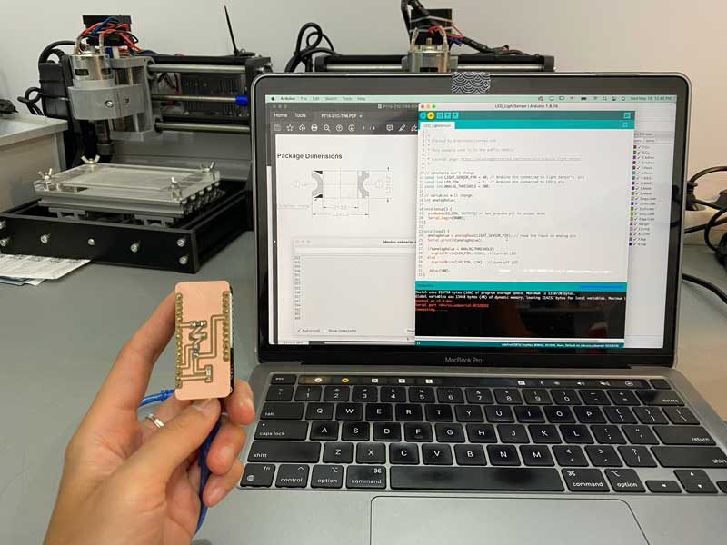
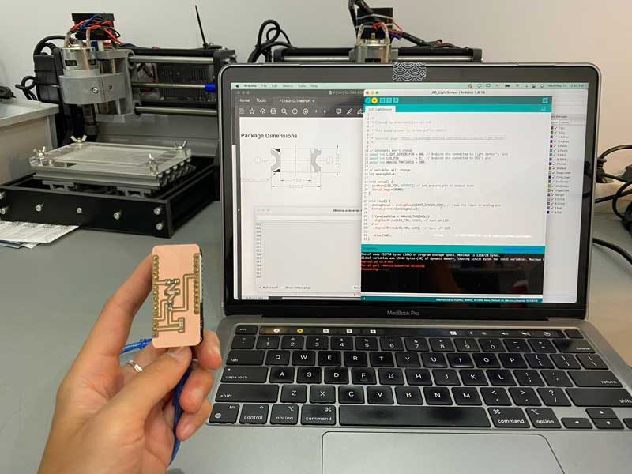

🗓 Week 8
Reviewing the depth of these programs and libraries, I was reminded of the complexities behind each seemingly simple function we use on a computer. But understanding the basics of how the computer works or how to program a microprocessor, will give me the platform to start a simple project.
Some key things to consider when working with microprocessors:
The arduino code below:
const int LIGHT_SENSOR_PIN = A7; // Arduino pin connected to light sensor's pin
const int LED_PIN = 5; // Arduino pin connected to LED's pin
const int ANALOG_THRESHOLD = 500;
int analogValue;
void setup() {
pinMode(LED_PIN, OUTPUT); // set arduino pin to output mode
Serial.begin(9600);
}
void loop() {
analogValue = analogRead(LIGHT_SENSOR_PIN); // read the input on analog pin
Serial.println(analogValue);
if(analogValue < ANALOG_THRESHOLD)
digitalWrite(LED_PIN, HIGH); // turn on LED
else
digitalWrite(LED_PIN, LOW); // turn off LED
delay(100);
}



Embeded Programming
This week, we went over the history and foundations of a computer from the very beginning. We started discussing the difference between analog and digital forms of machines and the cause of this transition, which was based on scalability and accuracy over time. We continued comparing differences between specific functions of components; the microcontrollers v. microprocessors and operative systems v. firmware, in order to understand how to make efficient choices when designing our own electronics.Reviewing the depth of these programs and libraries, I was reminded of the complexities behind each seemingly simple function we use on a computer. But understanding the basics of how the computer works or how to program a microprocessor, will give me the platform to start a simple project.
Some key things to consider when working with microprocessors:
- decisions are immediate
- keep things simple and clear: machines are stupid!
- always spend time on creating a flow chart with clear steps
- always the same answers to same questions
- when something goes wrong it’s human error or machine failure
The arduino code below:
const int LIGHT_SENSOR_PIN = A7; // Arduino pin connected to light sensor's pin
const int LED_PIN = 5; // Arduino pin connected to LED's pin
const int ANALOG_THRESHOLD = 500;
int analogValue;
void setup() {
pinMode(LED_PIN, OUTPUT); // set arduino pin to output mode
Serial.begin(9600);
}
void loop() {
analogValue = analogRead(LIGHT_SENSOR_PIN); // read the input on analog pin
Serial.println(analogValue);
if(analogValue < ANALOG_THRESHOLD)
digitalWrite(LED_PIN, HIGH); // turn on LED
else
digitalWrite(LED_PIN, LOW); // turn off LED
delay(100);
}
